Геймифицированный лайф-трекер · 2026
Origin
Пространство, которое помогает превратить личное «хочу» в первый посильный шаг.
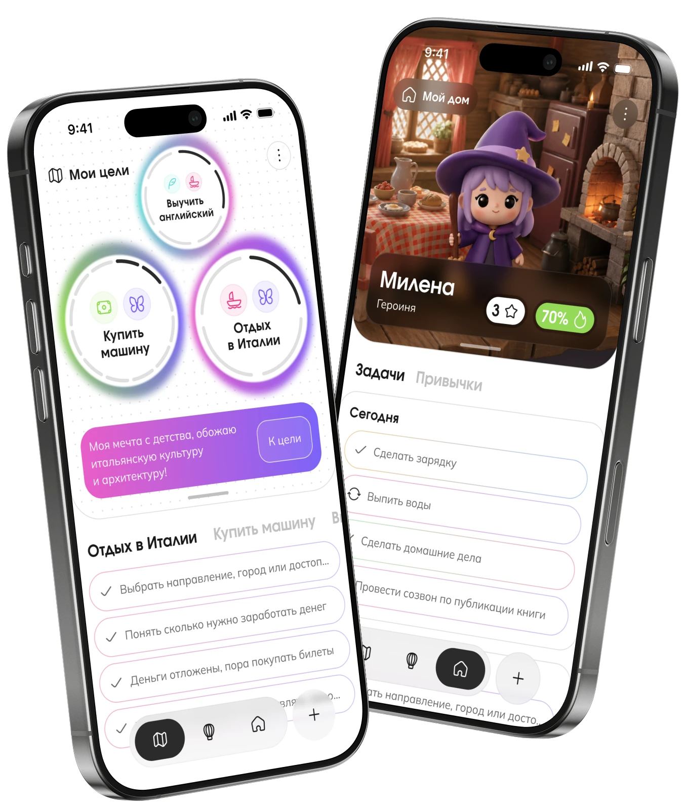
Задача
Не ещё один трекер задач, а пространство для важной цели
Людям бывает сложно сформулировать личную цель, перейти от намерения к действию и вернуться к планам после перерыва.
В привычных приложениях задачи, привычки и цифры прогресса быстро становятся самоцелью. Связь ежедневных действий с личным смыслом постепенно теряется.
Origin объединяет цель, личное «зачем», план, действия и рефлексию в одном сценарии. Пользователь сам выбирает нагрузку и может адаптировать путь к меняющимся обстоятельствам.
Сформулировать
Понять, чего хочется и почему это действительно важно.
Начать
Разложить большую цель и выбрать посильное первое действие.
Продолжить
Менять приоритеты, делать паузу и возвращаться без обнуления пути.
Продуктовая гипотеза
Личное «зачем» и первый шаг сокращают путь к действию
Если после перерыва история сохраняется, а нагрузку можно пересмотреть, человеку проще продолжить движение — без ощущения, что всё нужно начинать заново.
ЭтапМетрикаЧто проверяет
АктивацияСоздание первой целиПонятен ли первоначальный сценарий
Первая ценностьПервое действие за 24 часаПомогает ли продукт начать
УдержаниеD7 / D30Возвращается ли пользователь
ВозвращениеВозобновление после паузыПомогает ли не бросить путь
Исследование
Теория объяснила мотивацию, интервью — реальное поведение
Психологическая теория
Автономия, компетентность и связанность стали основой решений о выборе, прогрессе и поддержке.
25 конкурентов
Большинство продуктов измеряют действия, но редко удерживают связь с личным смыслом цели.
8 интервью
Мотивация оказалась нелинейной: ресурсы, приоритеты и желание действовать постоянно меняются.

Масштаб цели затрудняет начало
Предложить одно быстрое действие вместо полного плана.
Приоритеты меняются вместе с жизнью
Дать человеку пересобирать фокус в моменте.
Перерыв ощущается как провал
Сохранить историю и сделать возвращение частью сценария.
Игровые очки не равны прогрессу
Разделить эмоциональную награду и реальные действия.
От наблюдений к продукту
Девять состояний вместо линейного пути пользователя
Поиск цели → зажигание → страх → планирование → действие → фрустрация → пауза → возвращение → финиш. Пользователь может войти в цикл из разных точек и вернуться назад.
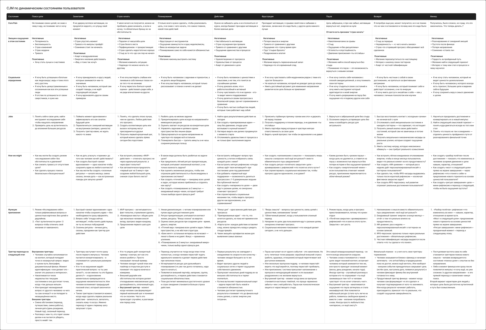
User flow
Сценарий меняется вместе с ситуацией пользователя
На каждом шаге приложение проверяет контекст: есть ли цель, есть ли план, хватает ли энергии сегодня. Дальше предлагает действие, пересмотр нагрузки или паузу.
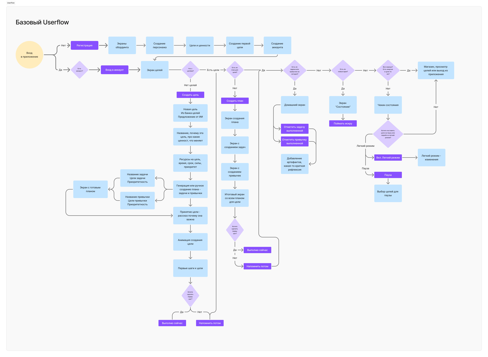
Регистрация после знакомства
Сначала человек понимает ценность и создаёт первую цель, затем сохраняет результат.
Экран подсказывает следующий шаг
Пустое состояние меняется в зависимости от того, что уже сделано.
Цель — главный объект
Личное «зачем», план и действия находятся рядом, а не в разных разделах.
Пауза не обнуляет путь
Пропуск не превращается в наказание и не требует наверстывать.
Визуальное направление
Личный цифровой мир вместо менеджера задач
3D-иллюстрации создают эмоциональный слой и показывают развитие пространства.
Монохромные компоненты остаются спокойными и предсказуемыми. Цвет появляется в целях, ценностях и прогрессе — там, где человеку важно заметить личное изменение.
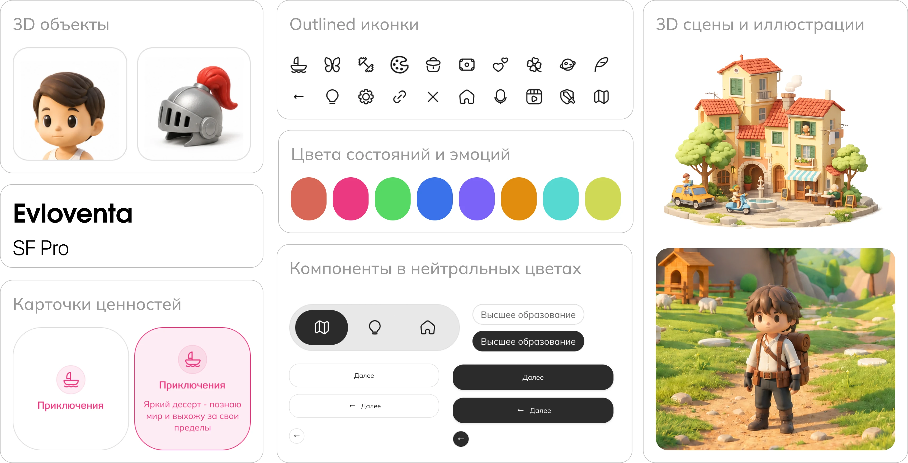
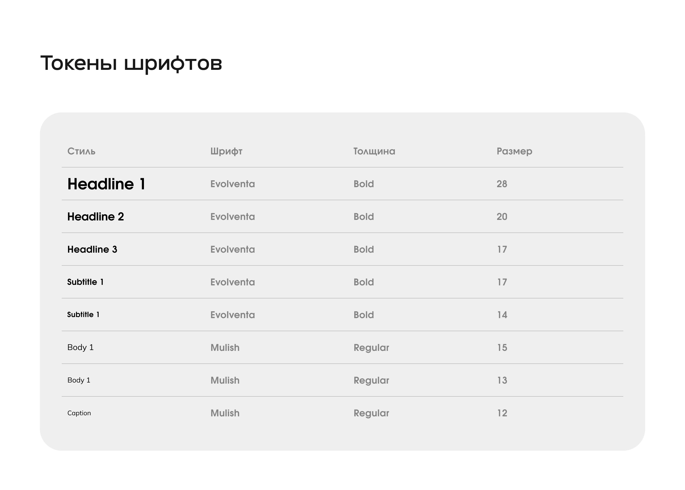
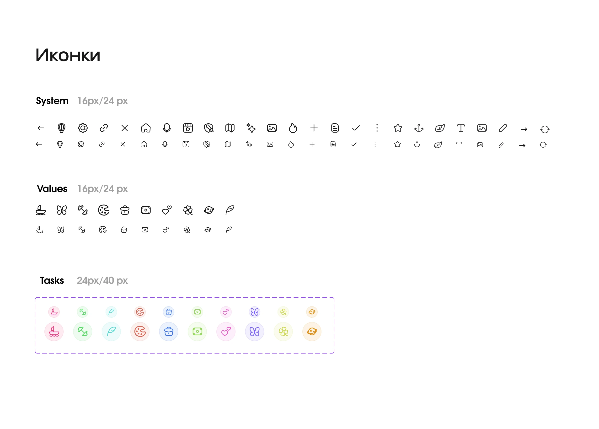
MVP-прототип
Четыре сценария: от знакомства до ежедневной адаптации
01
Онбординг и первая цель
Знакомство с идеей приложения, создание персонажа и переход к личной цели.
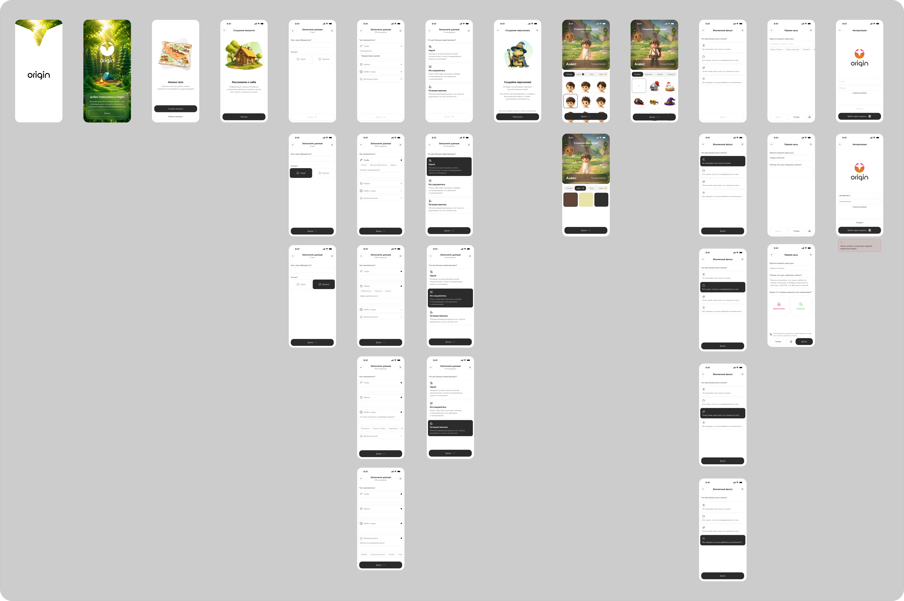
02
Создание цели
Человек фиксирует личное «зачем», ресурсы и первое выполнимое действие.
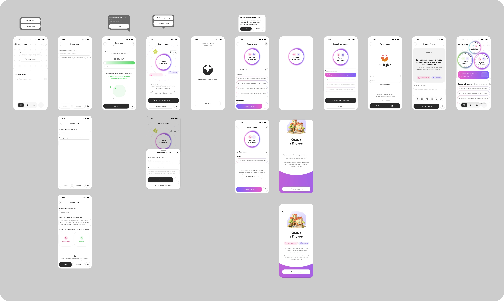
03
Чекин состояния
Пользователь сам сообщает о своём состоянии и выбирает подходящую нагрузку.
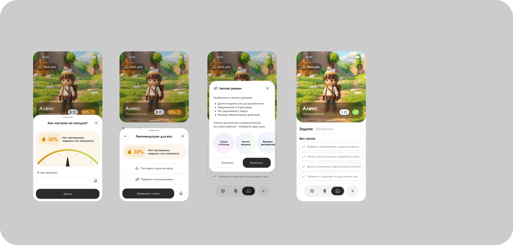
04
Пересмотр приоритетов
Фокус можно изменить без потери целей и пройденного пути.
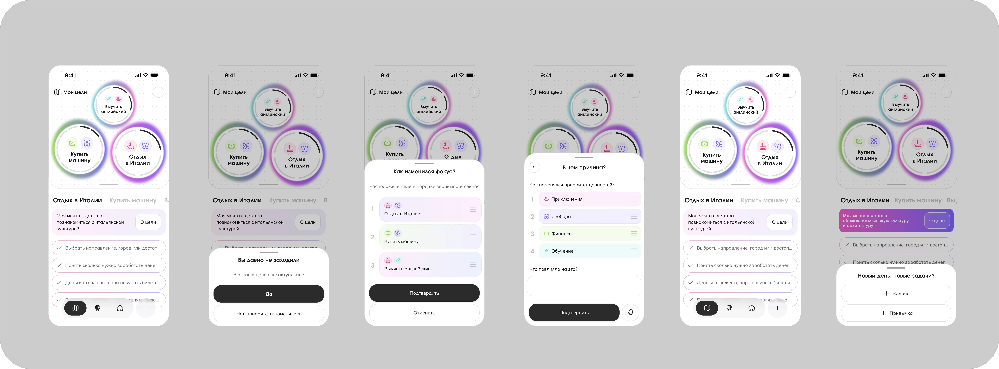
Юзабилити
13 из 13 участников завершили сценарий за 3:36
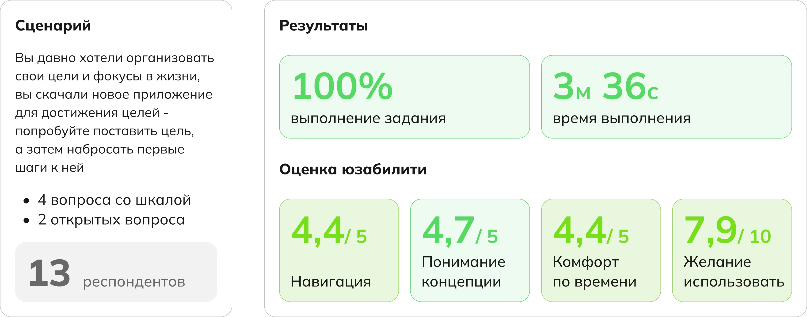
До
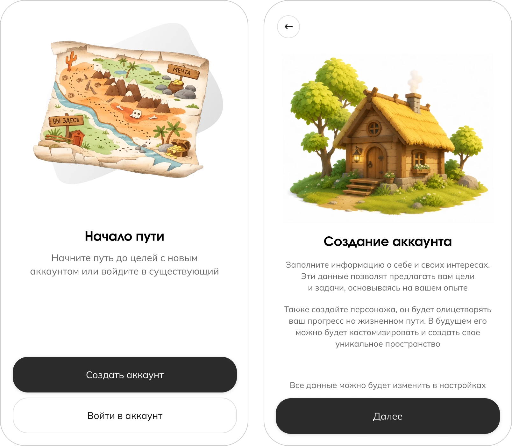
После
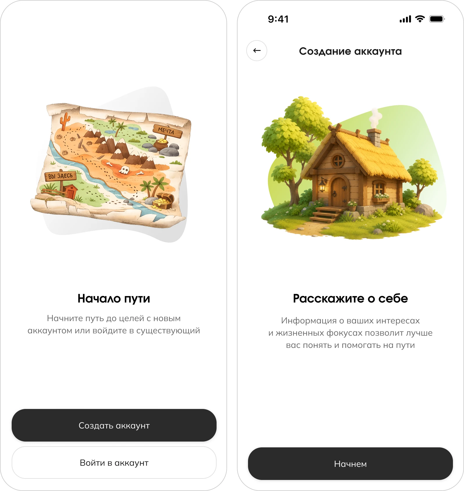
Тестирование подтвердило понятность сценария, но не доказывает влияние продукта на долгосрочную мотивацию — для этого нужен запуск и продуктовая аналитика.
После запуска
Главный эксперимент измеряет совершённое действие
A/B
Вопросы против минимальных подсказок
Сравнить самостоятельное создание цели с последовательными вопросами о личном «зачем», ресурсах и первом шаге.
Основной показательПервое действие в течение 7 дней
- Завершение онбординга
- Создание первой цели
- Выбор первого действия
- Выполнение действия
- Изменение приоритетов
- Возвращение после паузы
Что получилось
Исследование стало архитектурой, сценариями и MVP
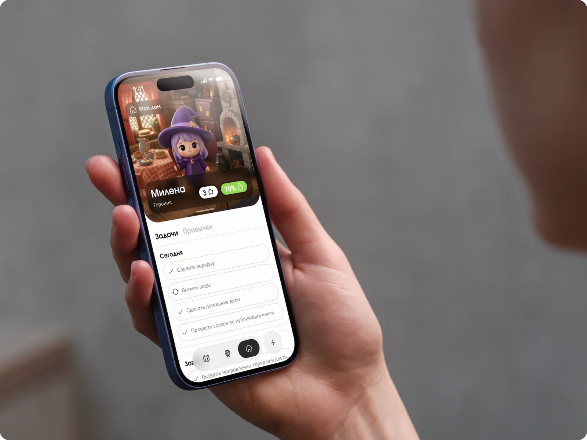
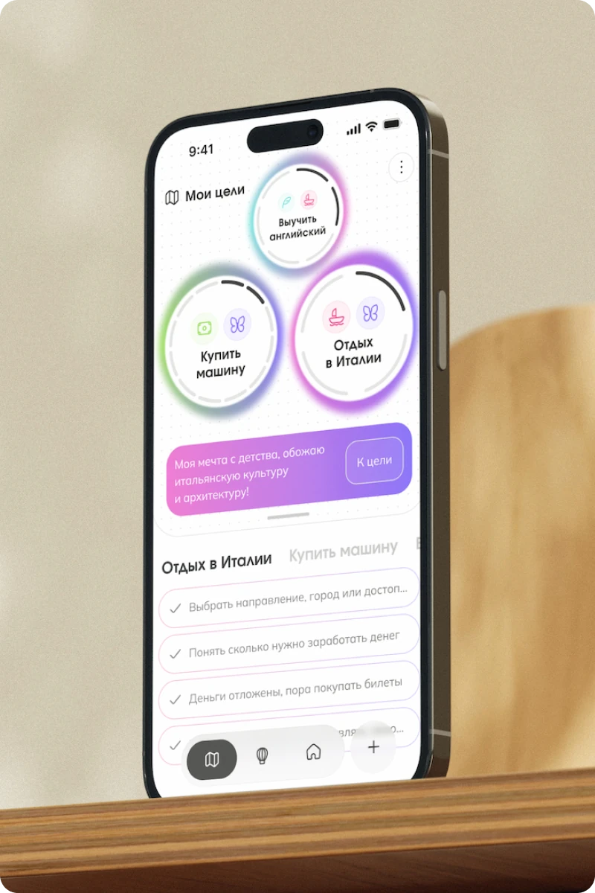
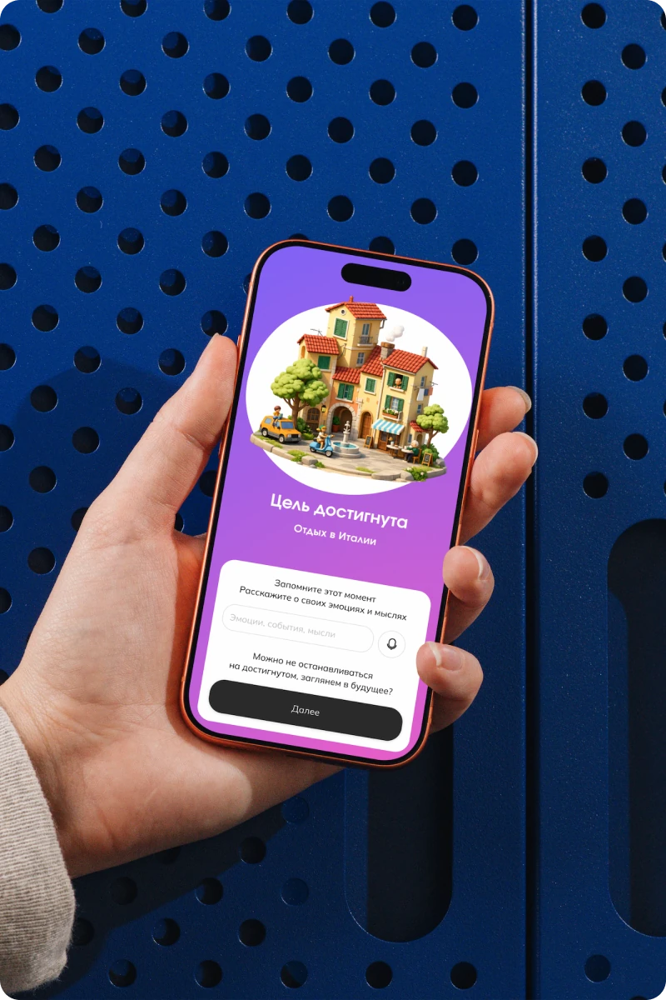
Главный вывод
Качественное исследование становится ценным только тогда, когда меняет продукт. Модель девяти состояний помогла уйти от идеального линейного пути и заложить в опыт страх начала, смену приоритетов, паузу и возвращение.